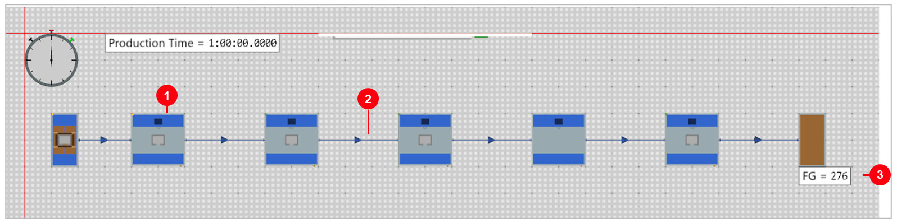
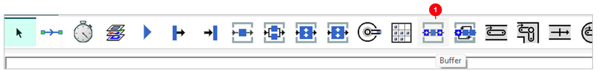
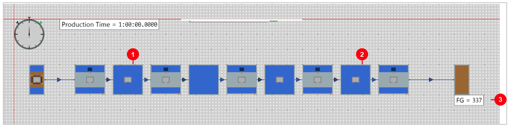
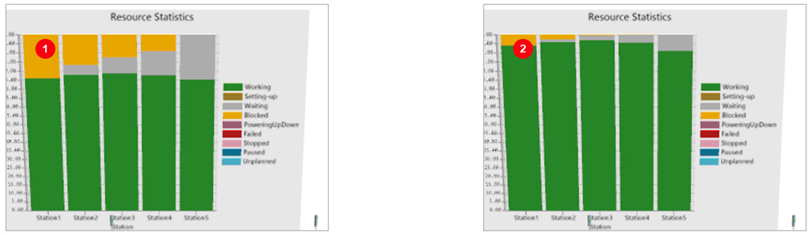
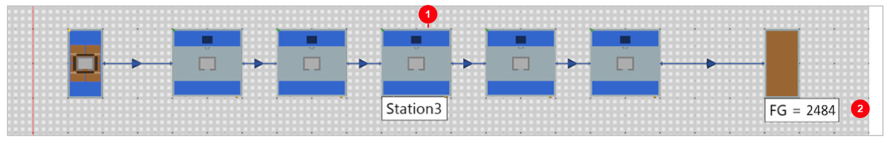
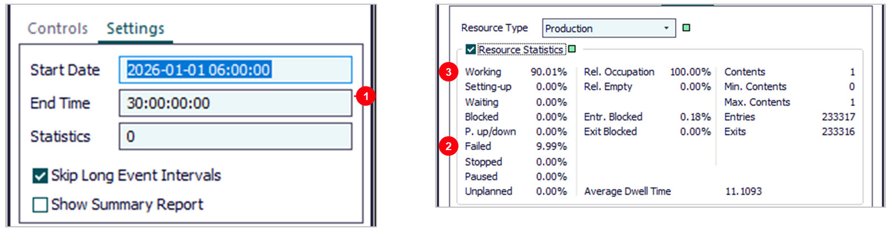

03. เวลาสุ่ม + Buffer + เครื่องเสีย + OEE
วัตถุประสงค์การเรียนรู้
- ตั้งเวลาทำงานแบบสุ่ม (Uniform) และอธิบายได้ว่าทำไมผลผลิตลดลงทั้งที่เวลาเฉลี่ยเท่าเดิม
- ใส่ Buffer เป็นพื้นที่พักงาน และรู้ว่า Buffer ช่วยเมื่อไรและไม่ช่วยเมื่อไร
- ตั้ง Failure ด้วย Availability และ MTTR อ่านแท็บ Statistics คำนวณ OEE และเลือกเวลาจำลองให้นานพอ
ต่อจากบท 02 — ไลน์ 5 สถานีเดิม เวลาเฉลี่ย 10 วินาทีเท่าเดิม บทนี้ดู 2 เรื่องที่ทำให้ไลน์ได้น้อยกว่าที่คิด: เวลาไม่คงที่ (แก้ด้วย Buffer) และเครื่องเสีย (อ่านผลด้วยแท็บ Statistics และ OEE) ทั้งหมด 9 ขั้น ไม่ต้องเขียนโค้ด
| ลำดับ | หัวข้อ | ผล | ขั้น |
|---|---|---|---|
| 1 | ตั้งเวลาแบบสุ่ม | Uniform 0:05–0:15 | 1 |
| 2 | Model ไม่มี Buffer | 355 เหลือ 276 | 2–3 |
| 3 | Model2 ใส่ Buffer | ความจุ 3 ชิ้น ได้ 337 | 4 |
| 4 | Model3 ไม่มีเครื่องเสีย | 1 กะ 8 ชม. ได้ 2,875 | 5 |
| 5 | ตั้ง Failure | Availability 90%, MTTR 5:00 | 6 |
| 6 | Model4 อ่านผล | 2,484 ชิ้น | 7 |
| 7 | Statistics + OEE | A × P × Q จากสถิติ | 8 |
| 8 | Model5 รัน 30 วัน | เครื่องเสียเข้าใกล้ 10% | 9 |
| 9 | ลองเอง | ความจุ Buffer, Availability, MTTR | – |
สิ่งที่ต้องมี: Plant Simulation 2606 และไฟล์
Basic_03_Buffer_Failures_OEE.spp
(Class Library › Models › Model … Model5) · ใส่ Buffer 3 ชิ้น ผลผลิต 276 → 337 ชิ้น/ชม.
(ทุกตัวเลขในบทนี้วัดจริงใน Plant Simulation 2606)
5 Frame ในไฟล์นี้ เล่า 2 เรื่อง
| Frame | เรื่อง | ขั้น |
|---|---|---|
Model | เวลาสุ่ม ต่อเครื่องตรงกัน ได้ 276 ชิ้น/ชม. | 1–3 |
Model2 | ใส่ Buffer ความจุ 3 ระหว่างทุกเครื่อง ได้ 337 ชิ้น/ชม. | 4 |
Model3 | กลับเป็นเวลาคงที่ 0:10 ไม่มีเครื่องเสีย 1 กะ ได้ 2,875 ชิ้น | 5 |
Model4 | Station3 Availability 90% MTTR 5:00 1 กะ ได้ 2,484 ชิ้น | 6–8 |
Model5 | เหมือน Model4 แต่รัน 30 วัน ได้ 324 ชิ้น/ชม. | 9 |
2 เรื่อง: เรื่องที่ 1 (Model, Model2) เวลาไม่คงที่ทำให้เสียผลผลิต ที่พักงานดึงกลับมาได้ ·
เรื่องที่ 2 (Model3–5) กลับไปใช้เวลาคงที่ เพื่อให้เห็นผลของเครื่องเสียอย่างเดียว ไม่ปนกับเวลาสุ่ม
ขั้นที่ 1: ตั้งเวลาทำงานแบบสุ่ม (Uniform)
- 1Uniform — สุ่มเวลาได้ทุกค่าในช่วงที่กำหนด (เลือกจากช่อง Const / Uniform / ชนิดอื่น)
- 20:05, 0:15 — ต่ำสุด 5 วินาที สูงสุด 15 วินาที เฉลี่ย 10 วินาที เท่ากับบท 02
ทำไมใช้เวลาสุ่ม: งานจริงไม่ได้ใช้เวลาเท่ากันทุกชิ้น · ไฟล์นี้ตั้งทุก Station แบบเดียวกัน · รันซ้ำได้ผลเท่าเดิมทุกครั้ง
ขั้นที่ 2: Model — เวลาเฉลี่ยเท่าเดิม แต่ได้น้อยลง

- 1Station1–5 — ทุกเครื่องสุ่ม 0:05–0:15
- 2ต่อเครื่องตรงกัน — ไม่มีที่พักงานระหว่างเครื่อง
- 3FG = 276 — ลดจาก 355 ในบท 02 (−22%)
ทำไมลดลง: เครื่องหน้าเสร็จเร็วแต่เครื่องหลังยังไม่ว่าง → ต้องรอส่ง · เครื่องหลังเสร็จเร็วแต่ไม่มีงานเข้า → ว่าง
ขั้นที่ 3: Chart — เสียเวลากระจายทั้งไลน์
- 1Station1 สีเหลือง — Blocked 24% ทำเสร็จแต่ส่งต่อไม่ได้
- 2Station5 สีเทา — Waiting 24% รองาน
- 3สีเขียว — ทุกเครื่องทำงานแค่ 76–79%
- 4ชื่อสถานะ — ดูสีจาก legend ด้านขวา
ต่างจากบท 02: ไม่มีเครื่องไหนเขียวเต็มแท่ง ไม่มีคอขวดจุดเดียว แต่ทุกเครื่องเสียเวลาไปกับการรอ
ขั้นที่ 4: Buffer = พื้นที่พักงานระหว่างเครื่อง

- 1Buffer — ไอคอนใน Toolbox (เลื่อนเมาส์ไปชี้จะเห็นชื่อ)
- 2Capacity = 3 — พักงานได้สูงสุด 3 ชิ้น
- 3Buffer Type = Queue — เข้าก่อน ออกก่อน (FIFO)
วิธีวาง: วาง Buffer ระหว่าง 2 Station แล้วต่อ Connector: Station → Buffer → Station
— Model2 มี Buffer1 ถึง Buffer4 ความจุ 3 ชิ้นทุกตัว วางระหว่างทุกคู่ของ Station

- 1Buffer1 — ระหว่าง Station1 กับ Station2
- 2Buffer4 — ระหว่าง Station4 กับ Station5
- 3FG = 337 — เพิ่มจาก 276 (+22%) ทุก Station ทำงาน 91–97%
Buffer ช่วยอย่างไร: ไม่ได้ทำให้เครื่องเร็วขึ้น แต่เครื่องที่เสร็จเร็วมีที่วางงาน ไม่ต้องหยุดรอเครื่องถัดไป

- 1ไม่มี Buffer — Station ทำงาน 76–79% · ได้ 276 ชิ้น/ชม.
- 2มี Buffer 3 ชิ้น — ทำงาน 91–97% · ได้ 337 ชิ้น/ชม.
สังเกต: สีเหลืองและสีเทาลดลงมาก เครื่องเดิม เวลาเดิม แค่เพิ่มที่พักงาน — Station5 ยังรองานอยู่บ้าง (Waiting 9%) เพราะเวลาสุ่มทำให้บางช่วงงานมาไม่ทัน
ขั้นที่ 5: Model3 — 1 กะ ไม่มีเครื่องเสีย
- 1End Time = 8:00:00 — จำลอง 1 กะ
- 2FG = 2,875 — ≈ 8 × 360 ชิ้น
- 3Chart เขียวทุกแท่ง — ทุกเครื่องทำงานเต็มที่
ทำไมกลับเป็นเวลาคงที่: ดูผลของเครื่องเสียอย่างเดียว ไม่ปนกับเวลาสุ่ม · 8 ชั่วโมงเพราะเครื่องเสียเกิดนานๆ ครั้ง
(ตั้งที่ EventController › Settings › End Time) — Model3 คือไลน์ของบท 02 (ทุกเครื่อง 0:10)
ขั้นที่ 6: เพิ่มเครื่องเสียให้ Station3
- 1Failures — แท็บตั้งเครื่องเสีย
- 2New… — เพิ่มรูปแบบเครื่องเสีย 1 แบบ
- 3Availability = 90% — เครื่องพร้อมทำงาน 90% ของเวลา
- 4MTTR = 300 — ซ่อมเฉลี่ยครั้งละ 300 วินาที (5 นาที)
Active: ติ๊กไว้ทั้งช่องบนและในตาราง = เปิดใช้เครื่องเสีย · เอาติ๊กออกเมื่ออยากรันแบบเครื่องไม่เสีย
— ดับเบิลคลิกแถว Failure ในตารางเพื่อเปิดดูรายละเอียด
- 1Availability (ติ๊ก) — กรอกเป็น % และ MTTR
- 2Availability = 90% — เวลาพร้อมทำงาน
- 3MTTR = 5:00 — เวลาซ่อมเฉลี่ยต่อครั้ง
- 4Interval = 45:00 — เวลาเฉลี่ยระหว่างเสีย โปรแกรมคำนวณให้
- 5Duration — เวลาเสียแต่ละครั้ง สุ่มรอบ 5:00
- 6Failure Relates To — SimulationTime = นับตลอดการจำลอง
ตรวจตัวเลข: 45 ÷ (45 + 5) = 90% ตรงกับ Availability ที่ตั้ง — ถ้าจะกรอก Interval เอง ให้เอาติ๊ก Availability ออก
ขั้นที่ 7: Model4 — เครื่องเดียวเสีย ทั้งไลน์หยุดตาม

- 1Station3 — มีเครื่องเสีย (เปิดชื่อไว้)
- 2FG = 2,484 — ลดจาก 2,875 (−14%)
- 3สีแดง = Failed — แท่ง Station3 ใน Chart
อ่าน Chart: Station3 เสีย → Station1–2 ส่งต่อไม่ได้ (เหลือง) → Station4–5 ไม่มีงานเข้า (เทา)
ขั้นที่ 8: อ่านแท็บ Statistics แล้วคำนวณ OEE
- 1Statistics — แท็บสถิติของเครื่อง
- 2Working 86.33% — เวลาที่ทำงานจริง
- 3Failed 13.60% — เวลาที่เครื่องเสีย
- 4Exits 2,486 — ชิ้นที่ผ่านเครื่องนี้
ทำไมไม่ใช่ 10%: เครื่องเสียเป็นการสุ่ม 8 ชั่วโมงสั้นเกินไป ค่ายังไม่เฉลี่ย (ดูขั้นที่ 9)
— ค่าในแท็บ Statistics เป็นของการรันล่าสุด กด Reset แล้วค่าจะเริ่มใหม่
คำนวณ OEE จากสถิติ: OEE = A × P × Q
| ตัวชี้วัด | ความหมาย | Model4 (8 ชม.) | มาจากไหน |
|---|---|---|---|
| Availability (A) | เวลาพร้อมทำงาน ÷ เวลาทั้งหมด | 86.4% | 100% − Failed 13.6% |
| Performance (P) | ความเร็วจริง ÷ ความเร็วที่ตั้ง | ~100% | ทำงานที่ 0:10 ตามที่ตั้ง |
| Quality (Q) | ของดี ÷ ของทั้งหมด | 100% | โมเดลนี้ไม่มีของเสีย |
| OEE | A × P × Q | ≈ 86% | ตรวจ: FG 2,484 ÷ เต็ม 2,880 = 86.3% |
หาปุ่ม OEE ไม่เจอ? Plant Simulation ไม่มีปุ่ม OEE ให้ คำนวณจากแท็บ Statistics (นิยาม OEE แบบมาตรฐานทั่วไป)
— ผลผลิตสูงสุดใน 8 ชั่วโมง = 8 × 3600 ÷ 10 = 2,880 ชิ้น
ขั้นที่ 9: Model5 — รัน 30 วัน ค่าจึงนิ่ง

- 1End Time = 30:00:00:00 — 30 วัน (วัน:ชม:นาที:วินาที)
- 2Failed 9.99% — ใกล้ 10% ที่ตั้งไว้
- 3Working 90.01% — FG 233,314 ชิ้น = 324 ชิ้น/ชม. = 360 × 90%
สรุป: ผลที่มีการสุ่ม ต้องรันนานพอ หรือรันหลายรอบแล้วเฉลี่ย ก่อนนำไปตัดสินใจ
— Model5 ตั้งเหมือน Model4 ทุกอย่าง ต่างแค่ End Time รันแบบไม่มีภาพเคลื่อนไหวใช้เวลาไม่กี่วินาที
รันสั้น vs รันยาว (Station3 Availability 90%)
| เวลาจำลอง | เครื่องเสียที่วัดได้ | FG ต่อชั่วโมง | อ่านว่า |
|---|---|---|---|
| 8 ชม. (Model4) | 13.6% | 310.5 | สั้นไป สุ่มเจอเสียมาก |
| 24 ชม. (Model4, End 24:00:00) | 9.1% | 327.0 | ยังแกว่ง |
| 30 วัน (Model5) | 10.0% | 324.0 | นิ่ง = 360 × 90% |
| ไม่มีเครื่องเสีย (Model3, 8 ชม.) | 0% | 359.4 | ฐานเปรียบเทียบ |
สรุป 5 Frame
| Frame | ตั้งค่า | เวลาจำลอง | ผลผลิต | Station ทำงาน |
|---|---|---|---|---|
Model | เวลาสุ่ม 0:05–0:15 ต่อเครื่องตรงกัน | 1 ชม. | 276 ชิ้น/ชม. | 76–79% |
Model2 | + Buffer ความจุ 3 ชิ้น | 1 ชม. | 337 ชิ้น/ชม. | 91–97% |
Model3 | เวลาคงที่ 0:10 ไม่มีเครื่องเสีย | 8 ชม. | 2,875 ชิ้น | ~100% |
Model4 | Station3 Availability 90% MTTR 5:00 | 8 ชม. | 2,484 ชิ้น | 86% |
Model5 | เหมือน Model4 | 30 วัน | 324 ชิ้น/ชม. | 90% |
เทียบกับเวลาคงที่ 0:10 ไม่มีเครื่องเสีย (บท 02) ได้ 355 ชิ้น/ชม. — เวลาสุ่มเสียไป 79 ชิ้นต่อชั่วโมง Buffer ดึงกลับมาได้ 61 ชิ้น ส่วนเครื่องเดียวเสีย 10% ทั้งไลน์ก็เสีย 10% เพราะไม่มีที่พักงาน
ลองเอง
แก้ทีละแถวจากค่าเดิม และกด Reset ก่อน Start ทุกครั้ง
ลองเอง 1: Buffer และเวลาสุ่ม (Model, Model2)
| Frame | ลองเปลี่ยน | FG หลังรัน | ทำไม |
|---|---|---|---|
Model2 | Buffer1–4 Capacity = 1 | 320 | พักได้น้อย ช่วยได้บางส่วน |
Model2 | Buffer1–4 Capacity = 10 | 339 | มากกว่า 3 ได้เพิ่มแค่ 2 ชิ้น |
Model2 | ทุก Station เวลา Const 0:10 | 355 | เวลาไม่ผันแปร Buffer ไม่ได้ช่วยเพิ่ม |
Model | Uniform 0:08–0:12 (ช่วงแคบลง) | 320 | ผันแปรน้อย เสียน้อยลง |
แถวที่ 3 สำคัญ: Buffer ช่วยเมื่อเวลาผันแปรเท่านั้น ถ้าเวลาคงที่ให้แก้ที่คอขวดแบบบท 02
ลองเอง 2: เปลี่ยนเครื่องเสียแล้วดูผล (Model4, Model5)
| Frame | ลองเปลี่ยนที่ Station3 | ผลหลังรัน | อ่านว่า |
|---|---|---|---|
Model5 | Availability = 95% | 341.5 ชิ้น/ชม. | เสีย 5% |
Model5 | Availability = 80% | 289.0 ชิ้น/ชม. | เสีย 20% |
Model5 | MTTR = 0:30 (เสียบ่อย สั้น) | 324.3 ชิ้น/ชม. | เท่าเดิม เมื่อไม่มี Buffer |
Model5 | MTTR = 30:00 (เสียน้อย นาน) | 322.1 ชิ้น/ชม. | ใกล้เคียงเดิม |
Model4 | MTTR = 0:30 (8 ชม.) | 2,583 ชิ้น | ต่างจาก 2,484 เพราะการสุ่ม |
แถว MTTR แสดงว่าในระยะยาว ผลขึ้นกับ Availability ไม่ใช่ MTTR เมื่อไลน์ไม่มี Buffer
ปัญหาที่พบบ่อย และวิธีแก้
| อาการ | วิธีแก้ |
|---|---|
| รันซ้ำแล้วผลเท่าเดิมทุกครั้ง | ปกติ: ตัวเลขสุ่มเริ่มจากค่า seed เดิม เปลี่ยนได้ที่ File › Options |
| Buffer เต็ม / ว่างตลอดเวลา | เต็ม = เครื่องถัดไปช้ากว่างานที่เข้า · ว่าง = งานเข้าช้ากว่าที่เครื่องถัดไปทำได้ |
| ใส่ Buffer แล้ว FG ไม่เพิ่ม | ถ้าเวลาคงที่ Buffer ไม่ช่วย ให้หาคอขวดแบบบท 02 |
| ไม่รู้ว่าไอคอนไหนคือ Buffer | เลื่อนเมาส์ไปชี้ไอคอนใน Toolbox จะเห็นชื่อ |
| ตั้ง Availability แล้วเครื่องไม่เสีย | ตรวจช่อง Active ในแท็บ Failures ทั้งช่องบนและในตาราง |
| เครื่องเสีย % ไม่ตรงที่ตั้ง | รันนานขึ้น (30 วันได้ 9.99%) หรือรันหลายรอบแล้วเฉลี่ย |
| หาปุ่ม OEE ไม่เจอ | ไม่มี ให้คำนวณจากแท็บ Statistics: A × P × Q |
| 3D Chart ว่างหลังรัน | รันด้วยปุ่ม Start แบบมีภาพเคลื่อนไหว |
คำถามฝึกคิด: หัวหน้าเห็นผล Model4 (รัน 8 ชม.) แล้วสรุปว่า "Station3 เสีย 13.6% ต้องรีบเปลี่ยนเครื่อง" ควรตอบอย่างไร?
เฉลย: 8 ชั่วโมงสั้นเกินไปสำหรับเหตุการณ์สุ่ม ตัวเลขยังแกว่ง (24 ชม. ได้ 9.1%, 30 วันได้ 10.0%)
ควรรันนานพอหรือรันหลายรอบแล้วเฉลี่ยก่อน — ค่าที่ตั้งไว้คือเสีย 10% และในระยะยาวทั้งไลน์จะเสียผลผลิตประมาณ 10% ตาม
เพราะไม่มีที่พักงานรอบ Station3